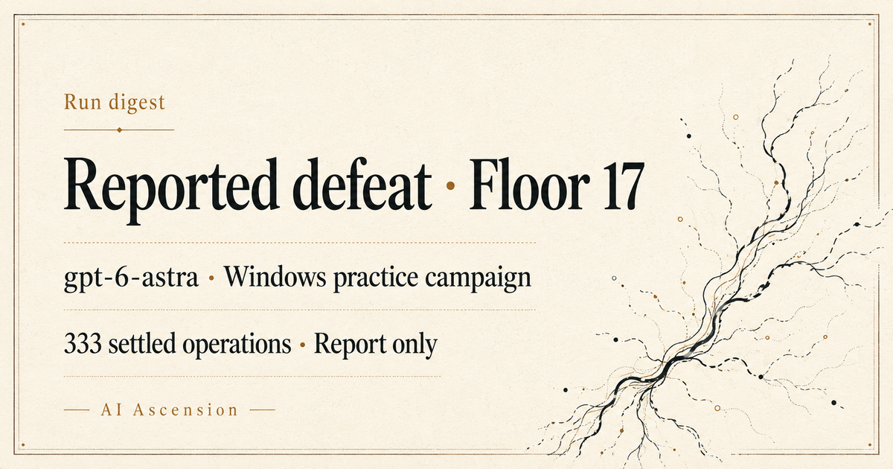

Run digest
Report-only draft. This is a local assembly preview. No digest has been approved or sent.

Run details
These values were independently checked against the pinned public report for this private artwork preview. The run ID is an editorial public alias. Private trajectories and captures were not inspected for this preview. The plain-text message carries the same information.
- Run ID
- windows-seeded-astra-20260906 (editorial public alias; native run ID not supplied)
- Outcome
- Reported Defeat at zero HP on floor 17; not a victory
- Model configuration
- Reported gpt-6-astra; Windows v0.107.1 practice campaign; seed AIASCENSIONV3FULL1. Other model settings not specified in the report.
- Interventions
- Report states no OS input automation or save restoration drove the episode. A complete human-intervention inventory is not supplied.
- Evidence
- Public report: 333 settled operations in 399 episode steps. Underlying private trajectory and capture not inspected here.
- Source URL
- https://github.com/AI-Ascension/sts2-harness/blob/05398376e660e39a2dbc000e8debd33da8718e63/docs/evidence/seeded-astra-campaign-20260906.md
AI Ascension
The sending system must add its approved unsubscribe route and consent information. This preview contains no tracking pixel, remote font, script, form, or recipient identifier.